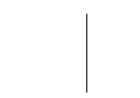
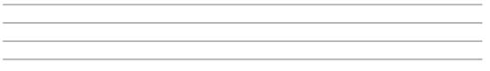
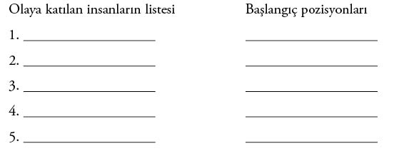
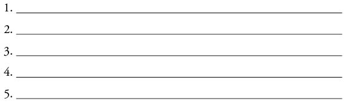
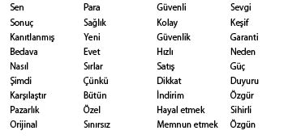
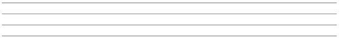
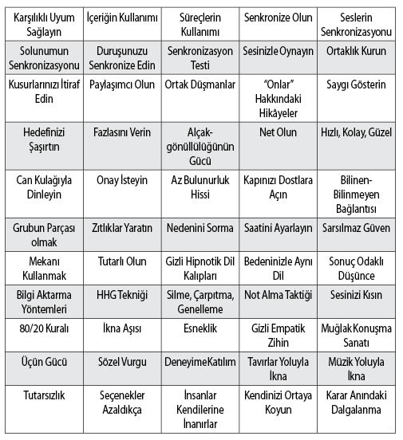

Ek
Gizli İkna Not Defteri
Bu notlar kullanımınız içindir. Dilerseniz, bu bölümün fotokopisini çekerek önemli ikna girişimleriniz öncesi kullanabilirsiniz. Not defterini tamamen doldurduğunuzda başarı olasılığınız artacaktır! Hadi başlayalım!
Günün tarihi: Toplantı tarihi:
Amacım (Bunu sizden başka gören olmayacak. O yüzden dürüst davranabilirsiniz. Tam olarak ne tür bir sonuca ulaşmak istediğinizi yazın.)

Sonuç Odaklı Düşünce Kutusu

İkna girişimlerim sonucunda nelere inanmalarını/hissetmelerini/yapmalarını istiyorum?

Mesajınızı İleteceğiniz Sözcükleri, Soruları ve Hikâyeleri Seçin
SÖZCÜK MÖNÜSÜ: Aşağıdaki sözcüklerden mesajınıza uygun olanları elinizden geldiğince kullanın. Bunlar, etkisi kanıtlanmış, en ikna edici sözcüklerdir. Kullanmayı planladıklarınızı işaretleyin.

Ünlü, ilerleme, büyüleyici, duyuru, çekici, nihayet, dikkat, özgün, dikkatli, pazarlık, çünkü, güçlendirici, devrim, rekabet, değişim, seçim, klasik, rahat, karşılaştırmak, tamamlamak, uyumlu, hazır, arzulamak, keşfetmek, sıra dışı, kolayca, verimli, enerji, özel, olağanüstü, hızlı, ücretsiz, taze, eğlenceli, iyileştirme, yardım, dürüst, kılavuz, acele, hayal etmek, önemli, gelişmiş, vazgeçilmez, inanılmaz, bilgilendirici, çabuk, samimi, sunan, akıl almaz, son şans, sevgi, lüks, büyülü, mucize, para, kazandıran, tasarruf, doğal, doğal olarak, yeni, şimdi, teklif, aşmak, huzur, mükemmel, lütfen, memnuniyet, artı, popüler, güç, güçlü, pratik, önleyici, kazançlı, söz, hızlı, fark etmek, önerilen, rahatlatıcı, rahatlama, bilimsel, gizli, çarpıcı, hizmet, kolaylaştırmak, gevşetmek, özel teklif, statü, durmak, coşturucu, çarpıcı, moda, üstün, garantili, şaşırtıcı, teşekkürler, güncel, gerçek, geleneksel, nihai, sınırsız, alışılmadık, yararlı, değerli, aranan, uyarı, senin.
SORU LİSTESİ: Bu soruları ekonomik kullanın. İyi sorulmuş, duyguları harekete geçiren sorularla, karşınızdaki insanın düşüncelerini yönlendirebilirsiniz.
Kendinize olumlu içsel sorular sorun, olumsuz soruların içeri sızmasını engelleyin.
• Bu sohbetin sonunda ne hissetmek istiyorum?
• Hedefimin ne hissetmesini istiyorum?
• Asıl amacım nedir? (Bu ilişkiden elde etmek istediğim şey nedir?)
• Ne kadar sürer? (Benim ne kadar zamanımı alacak? Hedefimin ne kadar zamanını alacak?)
• Hedefim taleplerimi kabul ederse amaçlarıma yaklaşmış olacak mıyım?
• Hedefim işbirliğini kabul ettiğinde daha iyi bir duruma gelecek mi?
• Ayrıntılar nelerdir? (Tarihler, saatler, maliyetler vesaire)
• Başka kimleri olaya katmam gerekir?
• Bilmediğim şeyler var mı?
• Ne tür sorunlar çıkabilir?
• Hedeflerimden ne tür itirazlar gelebilir?
• Hedefimin bu işten kazancı ne olacak?
• Başka bir insanı olaya katmakta yarar var mı; yoksa, kendi başıma mı yapmalıyım?
Soru sorarken “çünkü” sözcüğünü kullanın: “Çünkü” sözcüğü, bir şeyi yapma ya da yapmama nedenini ortaya koyar.
Soru sormak yanıtları getirir: Soru sorarak, süreci ve karşınızdaki insanı denetim altına alabileceğinizi unutmayın. Doğru soruları sorarak karşınızdaki insanları denetleyebilir, yönlendirebilirsiniz.
Kalıpları Yıkan Sorular
Yönlendirici sorular: Genellikle “Öyle değil mi?” ifadesiyle biter.
HİPNOTİK DİL KALIPLARININ KULLANIMI
Bu kalıpların başarısı, ne söylediğinizden çok, nasıl söylediğinize bağlıdır.
Mesajınızı sezdirmeden iletmek istiyorsanız tonlamaları ve duraklamaları dikkatli kullanın.
• Akıl verecek değilim; ama,...
• Ne düşünüyorsunuz?
• Bilmek isteyeceğinizi düşündüm.
• Karar vermenize yardımcı olacak.
• Mecbur değilsiniz.
• Kimi insanlar nedense...
• Bilemiyorum.
• Görmek ister miydiniz?
• Bazıları...
• Olsaydı...
• Seçmeniz gerekseydi...
• Hiç gördünüz mü?
• Duysanız şaşırmaz mıydınız?
• Neler olabileceğini bir hayal edin.
• İlgileniyor musunuz?
• Size yöntemini gösterseydim.
• Neler hissederdiniz?
• Bilemezsiniz.
• Göstermek isterim.
• Acaba?
• Sizce de öyle değil mi?
• Siz de öyle hissetmiyor musunuz?
Hedefinizi gizlice ikna ederken kullanacağınız cümleleri yazın:

55 Gizli İkna Taktiği
Kullanacağınız Taktikleri İşaretleyin
